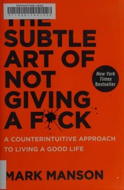
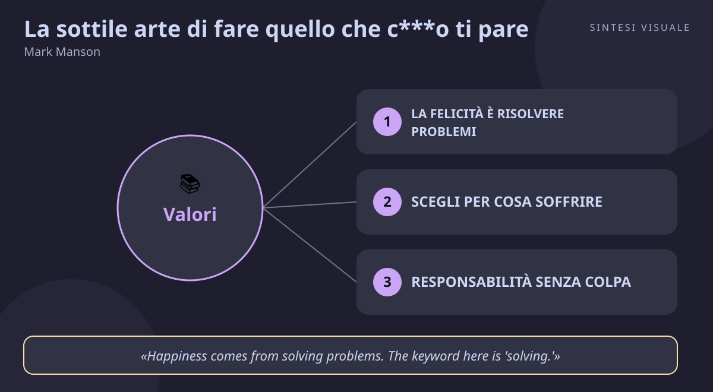

Home / Libri / La sottile arte di fare quello che c***o ti pare

La sottile arte di fare quello che c***o ti pare
Mark Manson · Crescita personale
«La sottile arte di fare quello che c***o ti pare»
- Scegli le lotte
- Valori buoni
- Responsabilita
- Fallire per crescere
📘Riassunto
La scintilla centrale. Il problema che il libro risolve è questo: più inseguiamo la felicità come assenza di problemi, più diventiamo infelici — perché i problemi non spariscono mai; l'unica via è scegliere problemi migliori, quelli che vale la pena avere, e costruire su di essi valori solidi e una vita che abbia senso.
La struttura logica. Si parte dalla storia di Charles Bukowski — perdente dichiarato, onesto fino al midollo, il cui epitaffio recita "Don't try" — per smontare il mito del successo a tutti i costi. Poi Manson mostra che la felicità nasce dal risolvere problemi (capitolo 2), che non siamo speciali come ci raccontano (capitolo 3), che la sofferenza va scelta attraverso valori buoni invece che cattivi (capitolo 4), che siamo responsabili di tutto ciò che ci accade anche quando non è colpa nostra (capitolo 5), che abbiamo torto su quasi tutto e il dubbio ci salva (capitolo 6), che il fallimento è la strada maestra (capitolo 7), che dire di no è libertà (capitolo 8) — e che la morte, infine, è la bussola che dà peso a ogni scelta (capitolo 9).
Il punto di svolta. La distinzione tra colpa e responsabilità cambia tutto: non è colpa tua se ti capita qualcosa di brutto, ma sei responsabile di tutto ciò che accade nella tua vita, perché sei sempre tu a scegliere come rispondere. Smette il vittimismo, inizia il potere personale.
L'eredità oggi. Uscito nel 2016, è diventato uno dei manuali di crescita personale più venduti del decennio, tradotto in oltre 50 lingue, con un seguito (Tutto è fottuto: una guida alla speranza, 2019) e un documentario; ha sdoganato un linguaggio diretto e antiretórico che ha influenzato tutta la divulgazione successiva su resilienza, valori e salute mentale.
💡Concetti chiave
- La felicità è risolvere problemi, non evitarli: stai bene quando risolvi problemi che ami, non quando non ne hai.
- Scegli per cosa soffrire: i valori cattivi (piacere, successo, approvazione) ti schiavizzano, quelli buoni (onestà, vulnerabilità, responsabilità) ti liberano.
- Responsabilità senza colpa: non è colpa tua ciò che ti accade, ma è sempre tua la risposta.
- Non sei speciale: accettare limiti e mediocrità ti libera dall'ansia della grandezza.
- Hai torto su quasi tutto: dubitare delle proprie certezze è l'unico modo per crescere davvero.
- Agisci prima di sentirti pronto, e ricordati che muori: l'azione crea motivazione, non il contrario; la morte dà valore al tempo.
📖1. La felicità è risolvere problemi, non evitarli
- Definizione la felicità non è uno stato permanente da conquistare ma un lavoro costante di risoluzione dei problemi: i problemi di oggi generano quelli di domani, e la qualità della tua vita dipende dalla qualità dei problemi che scegli di avere.
- Esempio due colleghi odiano entrambi i lunedì pieni di riunioni: il primo sogna "un lavoro senza stress" e si lamenta ogni settimana, il secondo accetta che coordinare persone sia il prezzo del ruolo che ama e impara a gestire le riunioni meglio — stesso problema, vite diversissime.
- Come applicarlo fai la lista dei tre problemi che ti assillano di più e per ciascuno scrivi: "questo problema mi sta portando verso qualcosa che conta per me?" Se sì, tienilo e risolvilo meglio; se no, lascialo andare invece di lamentarti.
- Errore comune credere che la felicità arrivi quando "tutto sarà a posto" (la promozione, la casa, il partner perfetto): ogni traguardo sposta solo l'asticella, e ricominci a soffrire per il traguardo successivo.
- Collegamento dialoga con Viktor Frankl (L'uomo in cerca di senso): non è l'assenza di sofferenza a dare senso, ma la sofferenza scelta per qualcosa che conta.
📖2. Scegli per cosa soffrire
- Definizione ogni valore comporta una sofferenza: i valori cattivi — piacere immediato, successo materiale, essere sempre nel giusto, restare positivi a ogni costo — dipendono da fattori fuori dal tuo controllo; i valori buoni — onestà, vulnerabilità, difendere gli altri, responsabilità, umiltà — si basano su ciò che puoi controllare e resistono agli imprevisti.
- Esempio il venditore che misura il suo valore dai "sì" dei clienti (valore cattivo: fuori dal suo controllo) vive ogni rifiuto come un fallimento personale; quello che misura il suo valore dalle telefonate fatte bene e dall'onestà verso il cliente (valori buoni: dentro il suo controllo) cresce anche nelle settimane no.
- Come applicarlo prendi un obiettivo che ti stressa e chiediti "quale valore sto servendo davvero?" Se la risposta è apparenza, approvazione o confronto con gli altri, riformulalo in termini di processo controllabile: non "voglio 10.000 follower", ma "pubblico due contenuti utili a settimana per un anno".
- Errore comune confondere mete vistose con valori: la fama, i soldi e l'approvazione sembrano valori ma sono premi incerti — inseguirli come valori ti rende schiavo del giudizio altrui.
- Collegamento richiama il circolo di controllo degli stoici (Epitteto: occupati solo di ciò che dipende da te) e Essentialism di Greg McKeown: meno cose, ma quelle giuste.
📖3. Responsabilità senza colpa
- Definizione colpa e responsabilità sono due cose diverse: la colpa riguarda il passato e chi ha causato un evento, la responsabilità riguarda il presente e chi sceglie la risposta — puoi non avere alcuna colpa ed essere comunque l'unico responsabile di cosa fare adesso.
- Esempio ti licenziano per una ristrutturazione: non è colpa tua, ma restano tue le scelte successive — aggiornare il curriculum o lamentarti per mesi, formarti o aspettare che "il sistema" ti salvi, chiedere aiuto o isolarti.
- Come applicarlo quando qualcosa va storto, vietati per 24 ore la domanda "di chi è la colpa?" e sostituiscila con "qual è la mia prossima mossa?": scrivila su un foglio in tre azioni concrete da fare entro la settimana.
- Errore comune i due estremi gemelli — dare la colpa a tutti (il capo, la crisi, i genitori) e restare fermi, oppure prendersi colpe irreali ("è colpa mia se piove") e punirsi invece di agire: entrambi evitano la responsabilità vera.
- Collegamento è la stessa idea di Il lato positivo dello stress di Kelly McGonigal e della terapia cognitiva di Feeling Good di David Burns: non controlli gli eventi, controlli il tuo rapporto con gli eventi.
📖4. Non sei speciale
- Definizione la cultura moderna ci ripete che siamo tutti straordinari e meritiamo cose straordinarie: questa narrazione alza le aspettative alle stelle e trasforma ogni vita normale — lavoro normale, risultati normali — in una delusione; accettare i propri limiti e la propria ordinarietà è invece la base della autostima sana.
- Esempio il giovane che rifiuta tre buone offerte di lavoro perché "merita di partire da dirigente" resta fermo un anno, mentre l'amico che accetta un ruolo junior e impara il mestiere dopo un anno lo ha superato: l'illusione della specialità ha bloccato il primo e liberato il secondo.
- Come applicarlo individua un ambito in cui pretendi l'eccezionalità senza prove (carriera, fisico, relazioni) e datti un obiettivo da persona normale ma costante: non "divento il migliore", ma "miglioro dell'1% al mese per un anno e misuro i progressi".
- Errore comune scambiare l'accettazione dei limiti per rassegnazione: non significa "non valgo niente", significa "valgo qualcosa di reale, non di immaginario" — e sul reale si può costruire.
- Collegamento dialoga con Mindset di Carol Dweck: la mentalità di crescita nasce proprio quando smetti di difendere l'etichetta di "talento speciale" e inizi a imparare dagli errori.
📖5. Hai torto su quasi tutto
- Definizione le nostre convinzioni sono mappe imperfette costruite su esperienze limitate: Manson sostiene che la crescita consiste nel mettere in dubbio attivamente le proprie certezze — valori, opinioni, ricordi — perché essere disposti ad avere torto è l'unica garanzia di avere un po' più ragione domani.
- Esempio il negoziatore convinto che "il cliente vuole solo il prezzo più basso" non ascolta davvero e perde la trattativa; quello che si chiede "e se mi sbagliassi? Cosa teme davvero questo cliente?" scopre che il cliente teme i ritardi — e chiude offrendo garanzie sui tempi, non sconti.
- Come applicarlo una volta a settimana, prendi una tua opinione forte e fai l'esercizio delle tre domande: "cosa succederebbe se mi sbagliassi? Quale prova mi farebbe cambiare idea? Che cosa direbbe una persona intelligente che la pensa al contrario?"
- Errore comune usare il dubbio come scusa per non decidere mai ("tanto non si può sapere niente"): Manson chiede umiltà, non paralisi — decidi, agisci, e resta pronto a correggere la rotta.
- Collegamento richiama Pensieri lenti e veloci di Daniel Kahneman: il Sistema 1 ci regala certezze rapide e spesso sbagliate, solo il pensiero lento le corregge; e Nudge di Thaler e Sunstein sulla fallibilità sistematica dei giudizi.
📖6. Agisci prima di sentirti pronto, e ricordati che muori
- Definizione la motivazione non è la causa dell'azione ma il suo effetto — azione, poi ispirazione, poi motivazione, in un ciclo che si autoalimenta: aspettare "di sentirsela" significa non partire mai. E la consapevolezza della morte (il memento mori) è il filtro finale: ti costringe a chiedere se ciò per cui soffri oggi conterà davvero.
- Esempio vuoi parlare in pubblico ma aspetti di "sentirti sicuro": chi aspetta non sale mai sul palco; chi accetta un piccolo intervento di cinque minuti davanti ai colleghi scopre che farla crea la sicurezza, e dopo sei mesi tiene presentazioni senza paura.
- Come applicarlo applica la regola dei 5 minuti: prendi l'attività che rimandi (sport, telefonata difficile, progetto) e falla per soli cinque minuti oggi — il resto viene da sé; poi chiediti "lo farei anche se mi restasse un anno di vita?" per potare gli impegni inutili.
- Errore comune la trappola del "quando... allora" ("quando avrò tempo, quando sarò pronto, quando i figli crescono"): il momento perfetto non arriva, arriva solo il rimpianto di non aver iniziato.
- Collegamento dialoga con Atomic Habits di James Clear (l'identità nasce dalle piccole azioni ripetute, non dall'ispirazione) e con gli stoici Marco Aurelio e Seneca: memento mori come arte di dare peso al presente.
💬Citazioni da ricordare
"Don't hope for a life without problems. There's no such thing. Instead, hope for a life full of good problems." — Non sperare in una vita senza problemi: non esiste. Spera piuttosto in una vita piena di problemi belli. Conta perché rovescia il sogno della felicità senza fatica: il punto non è eliminare i problemi, ma meritarseli.
"Happiness comes from solving problems. The keyword here is 'solving.'" — La felicità viene dal risolvere problemi. La parola chiave qui è "risolvere". Conta perché sposta l'attenzione dal traguardo al processo: stai bene mentre risolvi, non quando hai finito.
"Don't try." — Non provarci. L'epitaffio sulla tomba di Bukowski e titolo del primo capitolo: conta perché è il cuore controintuitivo del libro — smetti di inseguire disperatamente il successo e l'approvazione, accetta chi sei, e proprio così costruisci qualcosa di solido.
🌍Esempi di oggi
- Il collega che insegue i like. Posta ogni giorno i suoi successi sui social e controlla le reazioni ogni ora: ha scelto un valore cattivo (l'approvazione altrui, fuori dal suo controllo) e ogni post con pochi like diventa una piccola depressione — ha problemi cattivi che lo rendono infelice anche quando "vince".
- La trattativa persa dal venditore. Perde un cliente importante dopo settimane di lavoro: invece di crollare ("non valgo niente") o dare la colpa al mercato, si chiede "qual è la mia prossima mossa?" e richiama gli altri tre prospect trascurati — responsabilità senza colpa, in azione.
- La sera davanti alla serie TV. Rimandi da mesi palestra e corso d'inglese aspettando "il momento giusto e la motivazione": la regola dei 5 minuti ti fa mettere le scarpe e uscire per una passeggiata stasera — l'azione di oggi crea la voglia di domani, non il contrario.
🛠️Azioni pratiche
- Scrivi i tuoi tre problemi ricorrenti e per ciascuno rispondi per iscritto: "questo problema mi sta portando verso qualcosa che conta?" Tieni solo quelli con un sì convinto, e per gli altri decidi cosa smettere di inseguire (e dì il primo no entro 48 ore).
- Scegli un valore cattivo che ti governa (approvazione, confronto, perfezione) e riformulalo in un valore buono e controllabile da misurare ogni giorno per una settimana (esempio: da "piacere a tutti in riunione" a "dire almeno una volta la mia opinione onesta").
- Applica la regola dei 5 minuti all'attività che rimandi da più tempo: falla oggi per cinque minuti cronometrati, e fissa subito il secondo slot da cinque minuti per domani.
Da portare a casa: non puoi evitare la sofferenza, ma puoi sceglierla: scegli problemi degni di te e la felicità verrà da sé, un problema risolto alla volta.
Approfondimento in chat: rispondi con il numero di un concetto (1–6) per espanderlo con altri esempi ed esercizi guidati, oppure chiedimi un tema collegato — valori e scelte di vita, gestione del rifiuto nelle vendite, motivazione e procrastinazione, autostima senza autoinganno, paura di fallire, dare priorità al tempo...
📄
# La sottile arte di fare quello che c*o ti pare — Mark Manson
Titolo: La sottile arte di fare quello che co ti pare. Il metodo scorretto (ma efficace) per liberarsi da persone irritanti, falsi problemi e rotture di ogni giorno e vivere felici · Autore: Mark Manson · Anno:* 2016 (HarperOne; ed. italiana 2017)
Questo libro conta oggi perché viviamo sommersi da positività tossica — guru che promettono felicità senza fatica, social che mostrano vite perfette, pubblicità che ci dice che meritiamo tutto e subito: Mark Manson, blogger americano diventato autore bestseller mondiale con oltre 12 milioni di copie vendute e primo posto in quattordici paesi, ribalta il tavolo e dice una verità scomoda ma liberatoria. È utile a chiunque si senta stanco di inseguire aspettative irrealistiche: giovani in carriera, genitori sotto pressione, venditori e professionisti che temono il rifiuto, e chiunque voglia gestire stress ed emozioni senza maschere né autoinganni.
🖼️In un colpo d’occhio

Tocca l’immagine per ingrandirla.